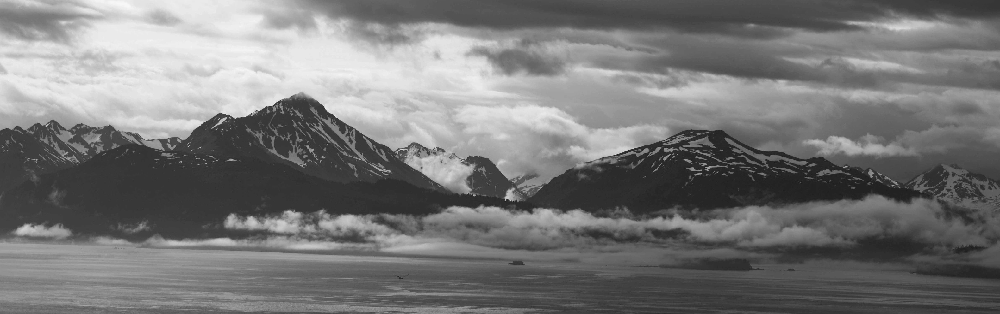

About Me
I am a researcher working for the
USDA Forest Service,
Northern Research Station. My work synthesizes approaches from economics, ecology, and evolution to address the human dimensions of resource management challenges. I am avid about outdoor recreation, especially cross-country skiing and running.